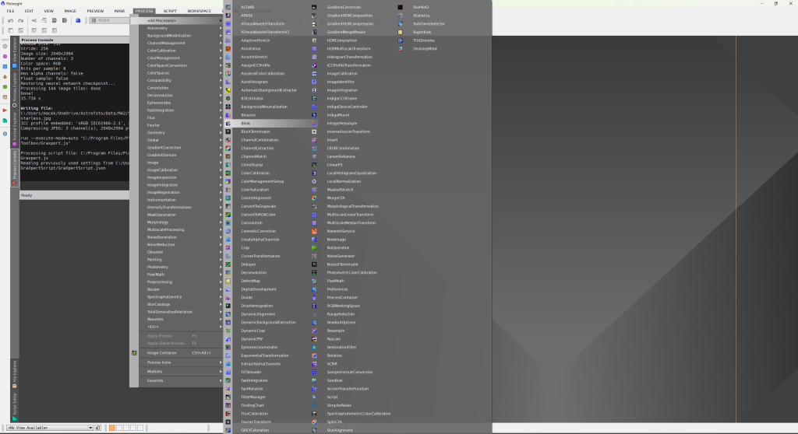
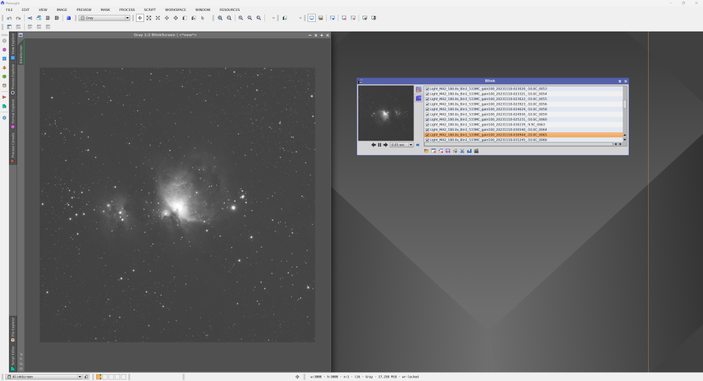
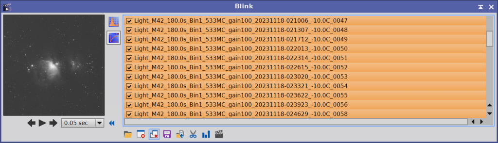
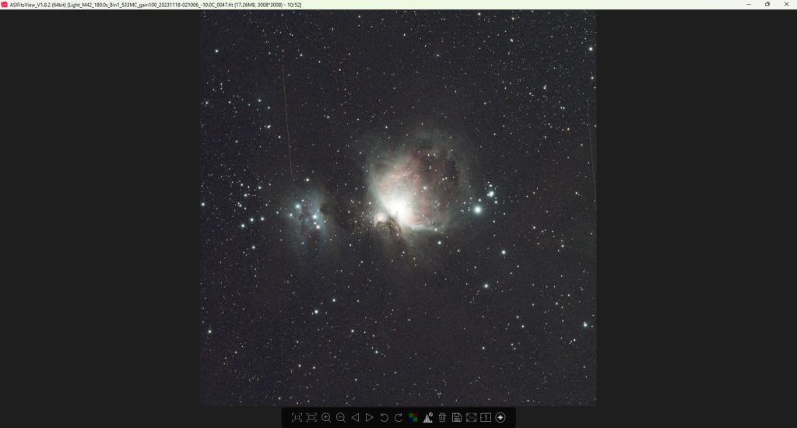

02 - Kontrola snímků
Data ke stažení jsou zde. Postupy se u jiných objektů mohou mírně lišit, ale základ zůstává stejný. Data si extrahujte do libovolné složky – odteď s nimi budeme pracovat.
Kontrola snímků
Před stackováním je vhodné projít light snímky (snímky objektu) a vyřadit ty nepovedené. Typicky půjde o snímky neostré, rozmazané kvůli guidování nebo třeba s přeletujícím letadlem přímo přes objekt. Satelity či letadla na okraji snímku obvykle nevadí.
Máte‑li vlastní nástroj na rychlou kontrolu a mazání snímků, použijte ho – já ukážu jednu možnost přímo v PixInsightu a druhou v bezplatném programu od ZWO.
Blink
Celou sekvenci lze v PixInsightu projít modulem Blink.
 Po otevření okna Blink klikněte na ikonu složky a načtěte všechny light snímky. PixInsight je načte do paměti – je to první drobná zkouška výkonu vašeho počítače.
Po načtení si okno zvětšete, klikněte na Play a snímky se začnou přehrávat. Rychlost lze nastavit. Podezřelé snímky hned poznáte a můžete je odstranit.
 Po práci s Blinkem nezapomeňte kliknout na Close all images. Jinak snímky zůstanou v paměti až do zavření programu.

ASIFitsViewer
Výbornou alternativou je program ASIFitsViewer od ZWO, který je zdarma. Je součástí balíku ASIStudio a stáhnete ho zde. Pokud vaše data nejsou ve formátu .fit, ASIFitsViewer je nemusí zobrazit. PixInsight to většinou zvládne. Pokud ne, použijte nástroj, na který jste zvyklí.
 Satelitní stopy PixInsight při stackování obvykle odstraní. Snímky určené ke stackování by měly být ostré a neměly by se výrazně lišit jasem. První snímky po západu slunce nebo poslední před východem často raději vyřaďte, pokud je rozdíl v pozadí patrný.
Dobrým vodítkem je „kulatost“ hvězd. Pokud nejde o optickou vadu sestavy, měly by být hvězdy co nejkulatější a napříč snímky podobně velké. Náhlý halo efekt kolem hvězd může znamenat vysokou oblačnost nebo orosení optiky – takové snímky vyřaďte. Doporučuji zazoomovat na skupinu hvězd ve středu a porovnávat ji napříč celou sekvencí.
To, že se objekt mírně „pohybuje“, není problém, pokud jde o posuny v jednotkách až desítkách pixelů. V mém případě je to důsledek ditheringu, tedy žádoucí stav. Posuny ale mohou vznikat i nepřesností montáže nebo focením na stativu, kdy objekt ujíždí vlivem rotace Země. Pokud je některý snímek výrazně posunutý oproti ostatním, je lepší ho vyřadit.
Výjimkou je situace, kdy je část snímků otočená o 180°. To je důsledek meridian flipu a stackovací software si s tím poradí.
Špatný snímek

OK snímek
 Jak přísní budete, závisí i na tom, kolik snímků máte. V našem případě (cca 2,5 h dat) chceme vyhodit jen pár nejhorších. Drobné nedostatky guidování nebo montáže raději odpustíme, protože PixInsight při stackování snímky sám hodnotí a špatné kusy vynechá nebo jim dá nižší váhu ve výsledném složeném obrázku.
Jak přísní budete, závisí i na tom, kolik snímků máte. V našem případě (cca 2,5 h dat) chceme vyhodit jen pár nejhorších. Drobné nedostatky guidování nebo montáže raději odpustíme, protože PixInsight při stackování snímky sám hodnotí a špatné kusy vynechá nebo jim dá nižší váhu ve výsledném složeném obrázku.